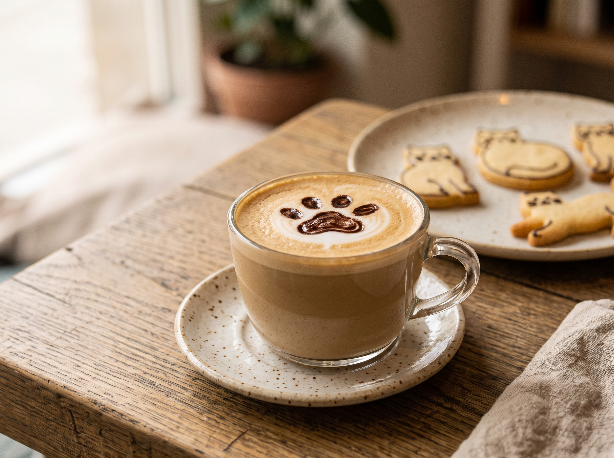
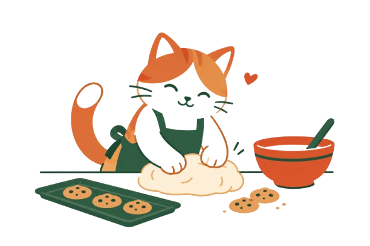
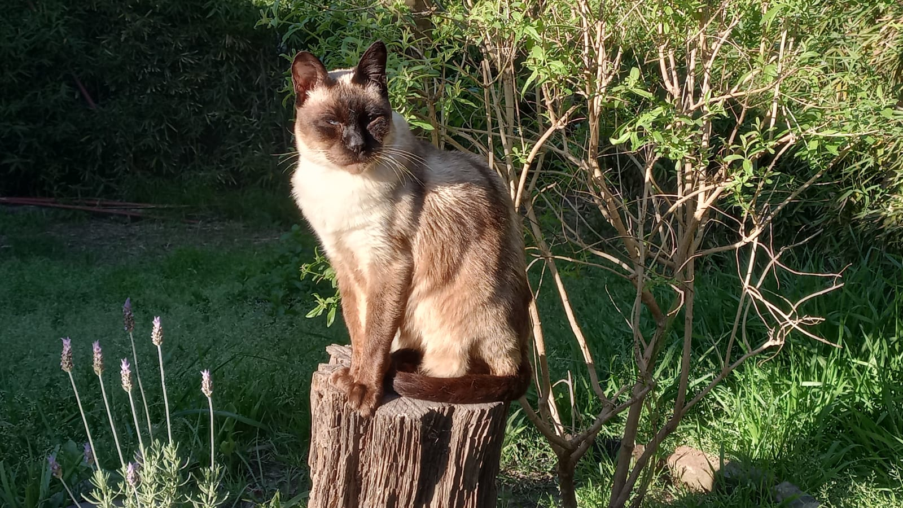
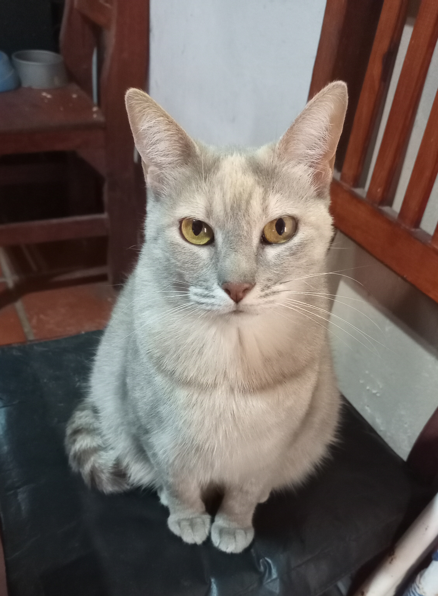
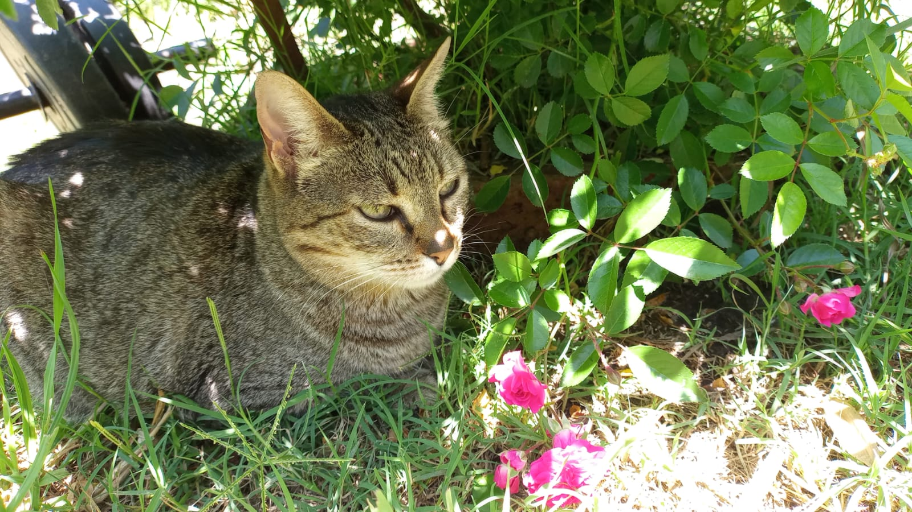
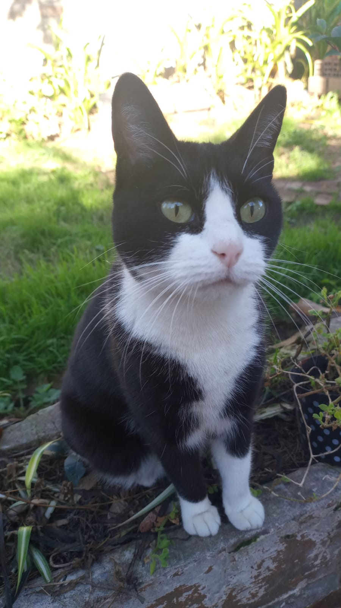

Latte Gatuno
Espresso suave con arte latte en forma de huellita.
Un café y refugio felino donde cada gato tiene una oportunidad y cada visita hace la diferencia.

Conoce a tus futuros mejores amigos.

Edad: 12 años
Tranquilo, dormilón y amante de los mimos en la panza.

Edad: 7 años
Súper juguetona y curiosa.

Edad: 5 años
Muy cariñosa, busca una familia tranquila para ronronear.

Edad: 3 años
Aventurera y parlanchín.
MichiCafé nació de un sueño muy simple: darle una segunda oportunidad a los gatos de la calle y ofrecer el mejor café de la ciudad en un solo lugar. Somos un refugio disfrazado de cafetería. Aquí, cada taza que tomas y cada cookie que pruebas ayuda a financiar los cuidados y la atención veterinaria de nuestros gatitos rescatados, mientras ellos esperan pacientemente encontrar a su familia para siempre.